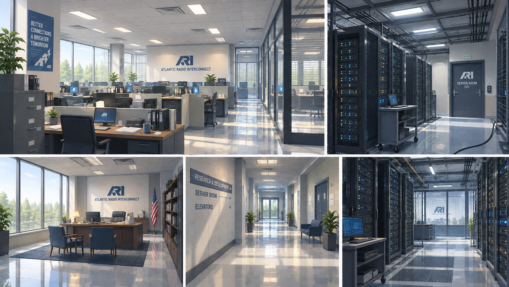
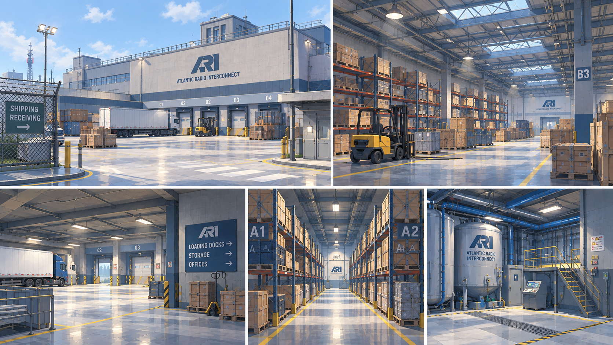

08:15
КОГДА ОБЪЕКТ
ВЫГЛЯДИТ
ОБЫЧНЫМ.
В утренней версии ARI ещё похожа на обычную радиотехническую корпорацию: офисы включаются, серверные светятся, а логистические зоны готовятся к работе.
Нам важно сохранить это спокойствие. Чем понятнее объект днём, тем заметнее становится то, что не укладывается в привычный рабочий порядок.


Эти листы помогают нащупать базовый ритм комплекса: открытые пространства, строгая навигация, свет от окон и ощущение учреждения, в котором всё должно быть под контролем.